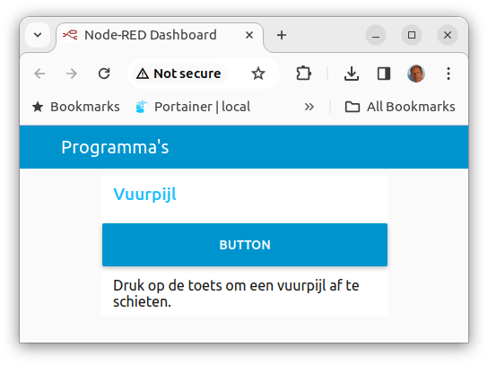
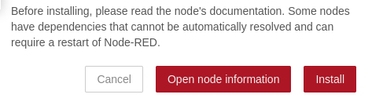
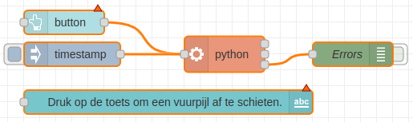

Een Vuurpijl activeren vanuit je smartphone.
Deze les geeft je een set knooppunten in Node-RED waarmee je snel een live data dashboard kunt maken. Je gaat een dashboard maken dat het volgende laat zien: een toets, die als je erop drukt de vuurpijl afschiet op de Sense-HAT.

Inhoud
Wat je nodig hebt
- Een Raspberry Pi 4B met het besturingssysteem Raspberry Pi Lite.
- Een Sense-HAT ingepluged op de Raspberry Pi.
- SSH verbinding met de Raspberry Pi.
- Les 7: Je derde applicatie: Vuurpijl afschieten". Als je die niet hebt importeer dan de volgende code in Node-RED, kijk in de bijlage hoe je dat moet doen.
Wat je gaat doen
Stap 1: De Node-RED Dashboard module downloaden.
Stap 2: Indelen van een dashboard.
Stap 3: De dashboard nodes toevoegen.
Stap 1 - De Node-RED Dashboard module downloaden.
Node-RED heeft al veel verschillende knooppunten om te gebruiken, maar soms wil je nog meer. Dan kun je nieuwe onderdelen toevoegen. Een handige toevoeging is de dashboard module. Deze module bestaat uit verschillende onderdelen die speciaal zijn gemaakt om een dashboard te maken. Bijvoorbeeld, er is een onderdeel om een toets en als je daar op drukt schieten we de vuurpijl af. Ook is er een onderdeel om gegevens als tekst weer te geven. Je moet de module wel zelf toevoegen, want het zit niet automatisch al in Node-RED.
| Stap | Actie |
|---|---|
| 1 | Als je naar "Manage Palette" wilt gaan, kun je op het menu klikken dat in de rechterbovenhoek van het scherm staat. Of je kunt de toetsen Shift + Alt + P indrukken. |
| 2 | Ga naar de "Install" tab en zoek naar node-red-dashboard in de zoekbalk. $\\$ |
| 3 | Als je de dashboard onderdelen wilt krijgen, moet je op de witte knop met "Install" erop klikken. |
| 4 | Je ziet een berichtje op je scherm. Druk op de rode knop waar "Install" op staat om de dashboard onderdelen te krijgen. $\\$ |
| 5 | Klik op de toets "Close". |
| 6 | Als je de dashboard onderdelen hebt geïnstalleerd, kun je ze vinden in het linkerkolom onder het kopje "dashboard". $\\$ |
Stap 2 - Indelen van een dashoard.
Een dashboard kan bestaan uit verschillende tabs. Een tab kan verschillende groepen hebben. Het is goed om hierover vooraf al een beeld te vormen.
Een gebruiker kan maar één tab actief hebben. Een tab kan bestaan uit verschillende groepen
Ons dashboard bestaat uit de tab Programma's met een groep Vuurpijl.
Opzetten van de structuur.
| Stap | Actie |
|---|---|
| 1 | Klik op pijltje naar beneden in het menu van de linkerkolom en kies voor Dashboard. $\\$ |
| 2 | Klik op +Tab om er een te maken. Het krijgt de naam Tab 1. $\\$ |
| 3 | Ga met je muis over de regel met Tab 1 en klik vervolgens op de Edit-toets. $\\$ |
| 4 | Geef als naam voor de tab op: Programma's. $\\$ |
| 5 | Ga met je muis over de regel met programma's en klik op group. |
| 6 | Ga met je muis over de regel met Group 1 en klik op de Edit-toets. |
| 7 | Geef als naam op voor de groep: Vuurpijl. Je hebt nu: $\\$ |
Stap 3 - De dashboard nodes toevoegen.
Als je het adres IP_adres_raspberry_pi:1880/ui intypt in je web browser, zul je de dashboard nodes zien die je toegevoegd heb aan je dashboard menu".
Volg deze stappen om het werk te doen:
| Stap | Actie |
|---|---|
| 1 | Gebruik de flow van opdracht 7 en sleep uit het dashboard overzicht de vogende twee nodes toe: button en text. $\\$ |
| 2 | Verander de tekst van de text-node in: "Druk op de toets om een vuurpijl af te schieten." |
| 3 | Dubbelklik op de toets button en kies voor de groep [Programma's] Vuurpijl. $\\$ |
| 4 | Klik op de toets `Done'. |
| 5 | Dubbelklik op de text-node en kies ook voor de groep [Programma's] Vuurpijl. $\\$ |
| 6 | Klik op de toets `Done'. |
| 7 | Klik op de Deploy-toets. |
| 8 | Ga in de browser naar <IP-adres Raspberry Pi>:1880/ui en druk op de Enter toets.$\\$ |
Samenvatting
In les 8 leren we hoe we een vuurpijl kunnen activeren vanaf onze smartphone met behulp van Node-RED. Node-RED is een programma waarmee we gemakkelijk een live data dashboard kunnen maken. We gaan een dashboard maken dat een knop bevat waarmee we de vuurpijl kunnen afschieten op de Sense-HAT.
Wat hebben we nodig? Een Raspberry Pi 4B met het besturingssysteem Raspberry Pi Lite, een Sense-HAT aangesloten op de Raspberry Pi en een SSH-verbinding met de Raspberry Pi.
Stap 1: We downloaden de Node-RED Dashboard module en installeren deze. Deze module bevat speciale onderdelen om een dashboard te maken.
Stap 2: We maken een nieuw tabblad in ons dashboard met de naam "Programma's" en een groep genaamd "Vuurpijl". Dit helpt ons om ons dashboard overzichtelijk te houden.
Stap 3: We voegen dashboard nodes toe, zoals een knop om de vuurpijl af te schieten en tekst om aan te geven wat er gaat gebeuren. Nadat we onze flow hebben ingezet, kunnen we ons dashboard bekijken in onze webbrowser.
Met deze stappen kunnen we een dashboard maken waarmee we vanaf onze smartphone een vuurpijl kunnen activeren op de Sense-HAT. Het is een leuke manier om te leren over programmeren en technologieën zoals de Raspberry Pi.